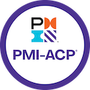
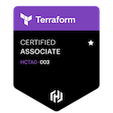

Certificaciones y Credenciales
 AWS AI Practitioner
AWS AI Practitioner
 AWS Cloud Practitioner
AWS Cloud Practitioner
AWS Developer
 CKAD Kubernetes
CKAD Kubernetes

PMI-ACP Agile
 GitHub Foundations
GitHub Foundations

Terraform Associate